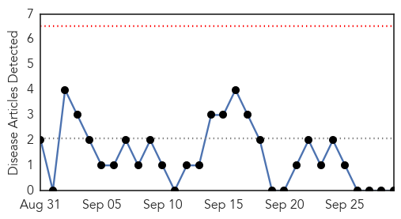
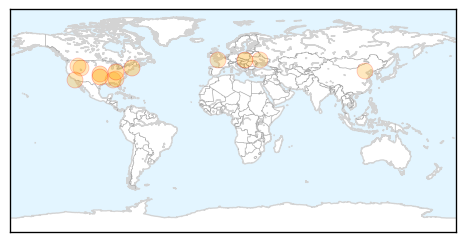
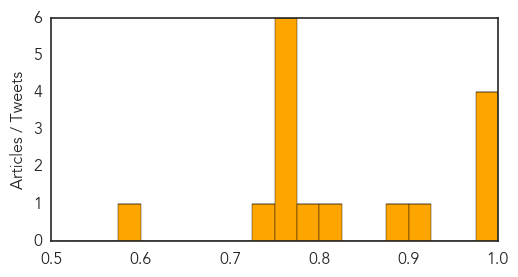

Pertussis
30-Day Web Trend
0 alerts, 0 warnings

30-Day Twitter Trend
0 alerts, 0 warnings

Article Locations

Article Confidences

Top Articles:
-
No articles found for Sep 29, 2015
Top Tweets:
-
No tweets found for Sep 29, 2015
Influenza
30-Day Web Trend
4 alerts, 3 warnings
30-Day Twitter Trend
1 alerts, 0 warnings
Article Locations
Article Confidences
Top Articles:
- 0.996
- Viral Lessons From The Heartland
- 0.995
- New flu shot more effective, health officials say
- 0.992
- Less than 5 percent of Slovaks got flu shots
- 0.982
- CDC Predicts Better Match for Flu Vaccine
- 0.916
- Family Life: Vaccinations may be the boost you need
- 0.891
- Flu shots now available locally in metro Detroit
- 0.824
- Health Experts Debate Masks’ Value In Flu Prevention
- 0.788
- Protect backyard flocks from avian flu
- 0.751
- September 29, 2015 Archives
- 0.751
- September 29, 2015 Archives
- 0.751
- September 28, 2015 Archives
- 0.751
- September 28, 2015 Archives
- 0.751
- September 28, 2015 Archives
- 0.751
- September 28, 2015 Archives
- 0.733
- Bird flu concerns peak as fall migration arrives
- 0.587
- A Schengen area of healthcare
Top Tweets:
-
No tweets found for Sep 29, 2015